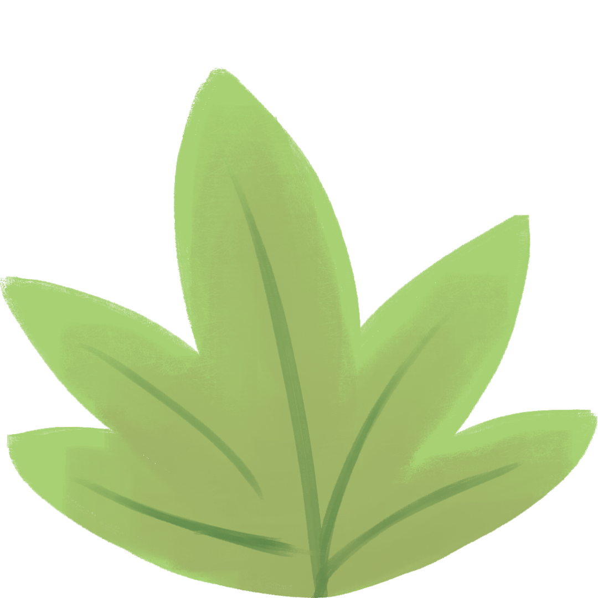
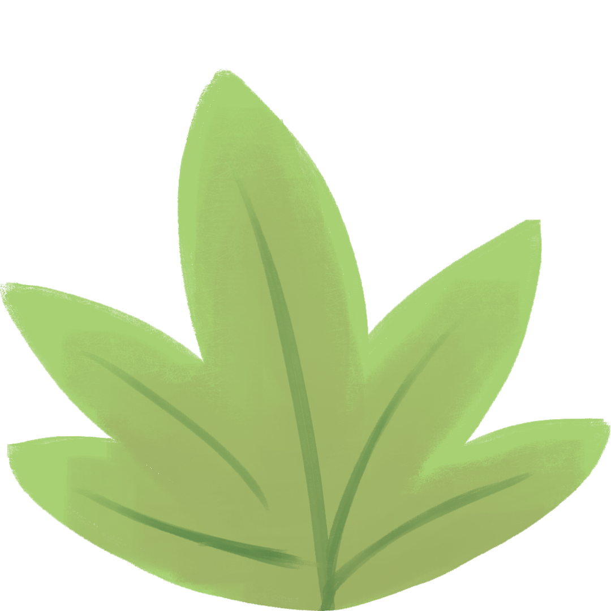

· Rotas Sensoriais Adaptadas:
Itinerários organizados conforme o nível de estímulos sensoriais (baixa, média e alta intensidade), permitindo que cada indivíduo escolha de acordo com sua sensibilidade.
· Espaços Tranquilos e Áreas de Descanso:
Indicação de locais onde é possível relaxar e se recuperar de possíveis sobrecargas sensoriais.
· Dicas para um passeio Confortável:
Sugestões práticas sobre horários mais tranquilos para visitas, uso de fones de ouvido com cancelamento de ruído e outros recursos para maior conforto.
· Atividades Multissensoriais:
Opções de passeios que envolvem diferentes estímulos, como contato com a natureza, experiências táteis e sonoras suaves, respeitando limites individuais.
· Checklist de Preparação:
Lista de itens essenciais para uma viagem tranquila, incluindo documentos, acessórios sensoriais (fones de ouvido, óculos de sol, brinquedos táteis) e estratégias para lidar com imprevistos.